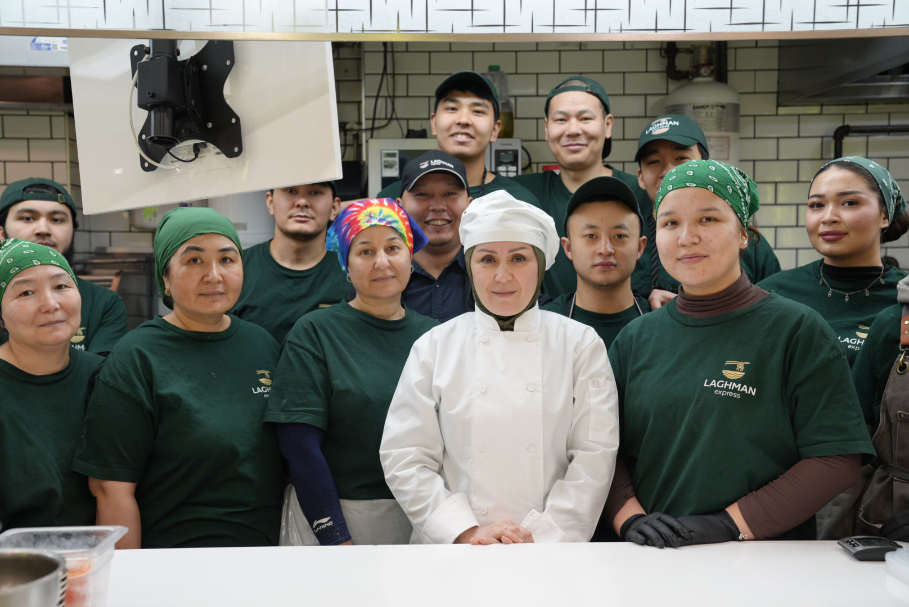

About Us
A team, a system, and a philosophy.
Laghman Express is an author-driven gastronomic brand redefining Central Asian cuisine within the contemporary landscape of New York.

Founded and architected by Brand Chef-Author Gulnoza Jurayeva, the concept represents a refined synthesis of traditional craftsmanship and strategic restaurant design. Under her leadership, the classic laghman has been transformed into a structured culinary system with clearly defined standards, an intentional kitchen architecture, and a scalable operational model.
At the heart of Laghman Express lies discipline in quality, technical precision, and deep respect for the origin of each recipe. Hand-pulled noodles remain the centerpiece of the kitchen; however, behind this artistry stands a meticulously engineered process that ensures consistency, balance, and visual refinement in every plate.
A defining strength of the brand is its team of highly trained professionals. Chefs, dough masters, shift managers, and service specialists operate as a synchronized system in which every role carries strategic importance. Under Gulnoza Jurayeva's direction, a culture of internal training, standardization, and continuous improvement has been established, enabling the brand to maintain excellence regardless of service volume.
While positioned at a premium culinary level, Laghman Express preserves one of its key competitive advantages — speed of service. Through precise coordination and an optimized operational framework, dishes are delivered efficiently without compromising quality or presentation. This balance between craftsmanship and performance distinguishes the brand from traditional restaurant formats.
Gulnoza Jurayeva serves not only as a chef, but as a strategist shaping a new standard for presenting Central Asian cuisine in the United States. Under her leadership, the brand has received institutional recognition and official commendations for its contribution to New York's cultural and entrepreneurial community, reinforcing its status as one of the most structurally developed gastronomic concepts within its niche.
Today, Laghman Express is more than a restaurant. It is a team, a system, and a philosophy operating in absolute harmony.
We do not simply serve food quickly.
We serve culture with precision and dignity.
— Laghman Express, New York
Taste what the system is built for.
Order pickup